Food Inflation and the Cost of Living: An Essential Connection
Food represents the most immediate and unavoidable component of household cost of living. Unlike discretionary expenses that can be deferred or eliminated, food consumption is fixed—families must eat regardless of price levels. This makes food inflation uniquely impactful on household budgets, particularly for lower-income families who allocate 15-20% of their income to food compared to 10-12% for higher-income households.
The 2010-2024 period captured in this analysis spans a fundamental transition in American food affordability. What began as a decade of predictable, manageable price increases transformed into the most rapid food cost acceleration in forty years. For households operating on fixed or slowly-growing incomes, this wasn’t an abstract economic statistic—it was the difference between filling a grocery cart for $100 versus $130, between weekly restaurant meals becoming monthly luxuries, between comfortable budgeting and constant financial stress.
The time series analysis that follows dissects this transformation through multiple lenses: trend identification reveals the structural break at COVID-19; autocorrelation analysis confirms price increases are permanent rather than reversible; decomposition shows trend dominance over seasonality; and stationarity tests prove each inflation shock resets the baseline permanently higher. Together, these technical findings translate to a simple household reality: food costs won’t return to pre-pandemic levels, budget adjustments must be permanent, and the middle-class consumption patterns of 2019 now require upper-middle-class incomes in 2024.
Show Code
# Load librarieslibrary(tidyverse)library(lubridate)library(ggplot2)library(forecast)library(tseries)library(gridExtra)library(viridis)library(zoo)library(TTR)library(astsa) library(xts)library(fpp2)library(fma)library(TSstudio)library(quantmod)library(tidyquant)library(plotly)library(dplyr)library(reshape2)# Set themetheme_set(theme_minimal() +theme(plot.title =element_text(size =14, face ="bold"),plot.subtitle =element_text(size =12),axis.title =element_text(size =11),axis.text =element_text(size =10) ))# Load data functionload_fred_csv <-function(file_path, series_name) {tryCatch({ data <-read_csv(file_path, show_col_types =FALSE)# Handle different CSV formats col_names <-names(data) date_col <- col_names[grepl("DATE|date|Date", col_names)][1]if (is.na(date_col)) date_col <- col_names[1] value_col <- col_names[!col_names %in% date_col][1] data <- data %>%select(date =all_of(date_col), value =all_of(value_col)) %>%mutate(date =as.Date(date),value =as.numeric(as.character(value)) ) %>%filter(!is.na(date), !is.na(value)) %>%arrange(date)return(data) }, error =function(e) {cat("✗ Error loading", series_name, ":", e$message, "\n")return(NULL) })}# Load the three CSV filesfood_data_files <-list(list(path ="data/CUSR0000SAF11.csv", name ="Food at Home CPI", var_name ="food_at_home"),list(path ="data/CUSR0000SEFV.csv", name ="Food Away from Home CPI", var_name ="food_away_home"),list(path ="data/CPIAUCSL.csv", name ="Overall CPI", var_name ="cpi_all"))# Load and combine dataloaded_data <-list()for (i in1:length(food_data_files)) { file_info <- food_data_files[[i]]if (file.exists(file_info$path)) { data <-load_fred_csv(file_info$path, file_info$name)if (!is.null(data)) { data <- data %>%rename(!!file_info$var_name := value) loaded_data[[file_info$var_name]] <- data } }}# Combine datasetscombined_food_data <- loaded_data[[1]]for (i in2:length(loaded_data)) { combined_food_data <- combined_food_data %>%full_join(loaded_data[[i]], by ="date")}# Clean and prepare datacombined_food_data <- combined_food_data %>%arrange(date) %>%filter(if_any(-date, ~!is.na(.x)))
Food Inflation: The COVID-19 Structural Break
Show Code
# TIME SERIES PLOTS AND COMPONENT IDENTIFICATION# Create time series objectscreate_ts_objects <-function(data) { available_cols <-names(data)[names(data) !="date"] ts_list <-list()# Determine start date and frequency start_year <-year(min(data$date)) start_month <-month(min(data$date))for (col in available_cols) { ts_list[[col]] <-ts(data[[col]], start =c(start_year, start_month), frequency =12) }return(ts_list)}ts_data <-create_ts_objects(combined_food_data)# Function to analyze time series componentsanalyze_ts_components <-function(ts_obj, series_name) {# Convert to data frame for ggplot ts_df <-data.frame(date =as.Date(time(ts_obj)),value =as.numeric(ts_obj) )# Create comprehensive time series plot p <-ggplot(ts_df, aes(x = date, y = value)) +geom_line(color ="#1f77b4", size =1, alpha =0.8) +geom_smooth(method ="loess", span =0.3, color ="#ff7f0e", size =1.2, alpha =0.7) +labs(title =paste("Time Series Analysis:", series_name),subtitle ="Blue line: Original series | Orange line: Trend (LOESS smoothing)",x ="Date",y ="Consumer Price Index",caption ="Data: Federal Reserve Economic Data (FRED)" ) +theme_minimal() +theme(plot.title =element_text(size =16, face ="bold"),plot.subtitle =element_text(size =12) ) +geom_vline(xintercept =as.Date("2020-03-01"), linetype ="dashed", color ="red", alpha =0.6) +annotate("text", x =as.Date("2020-06-01"), y =max(ts_df$value) *0.95, label ="COVID-19", color ="red", size =3, angle =90) return(p)}# Create time series plots for each variableavailable_vars <-names(ts_data)ts_plots <-list()for (i in1:length(available_vars)) { var_name <- available_vars[i] display_name <-case_when( var_name =="food_at_home"~"Food at Home CPI", var_name =="food_away_home"~"Food Away from Home CPI", var_name =="cpi_all"~"Overall CPI (All Items)",TRUE~str_to_title(str_replace_all(var_name, "_", " ")) ) ts_plots[[i]] <-analyze_ts_components(ts_data[[var_name]], display_name)print(ts_plots[[i]])}
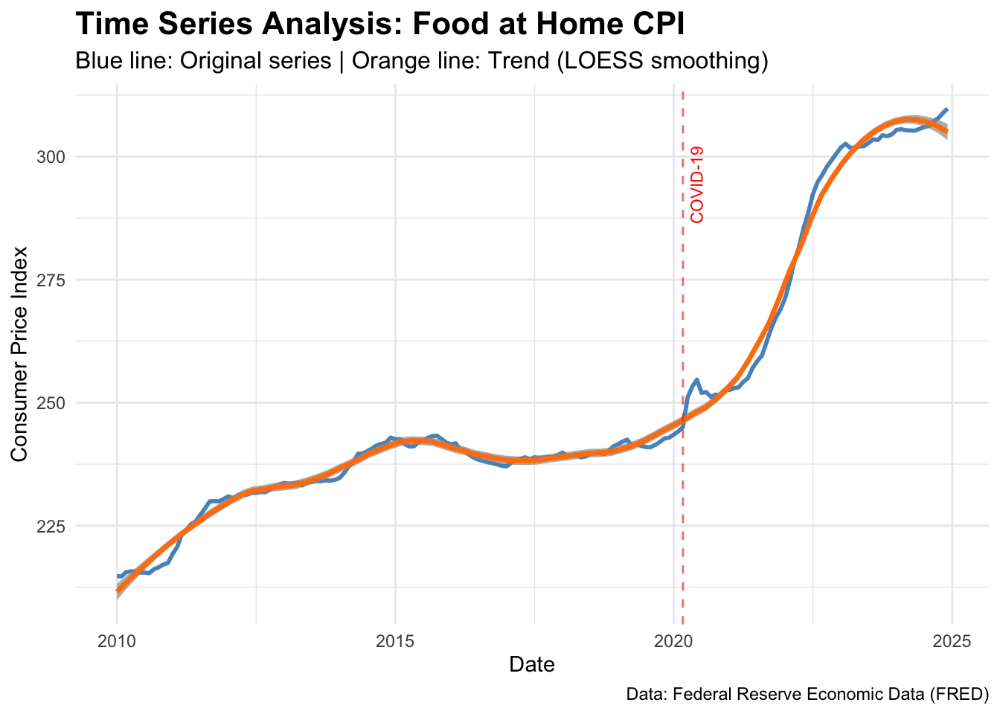
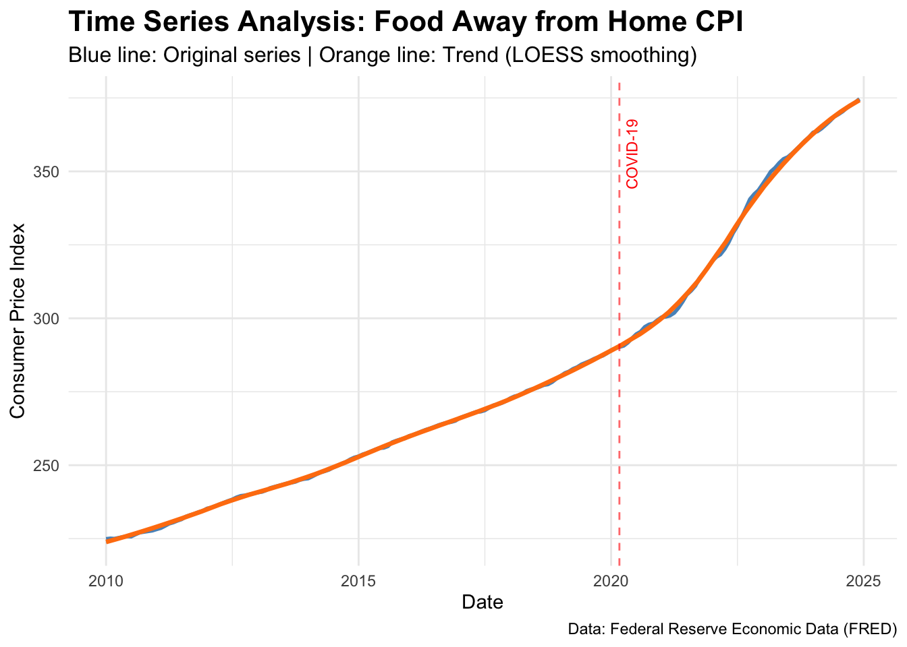
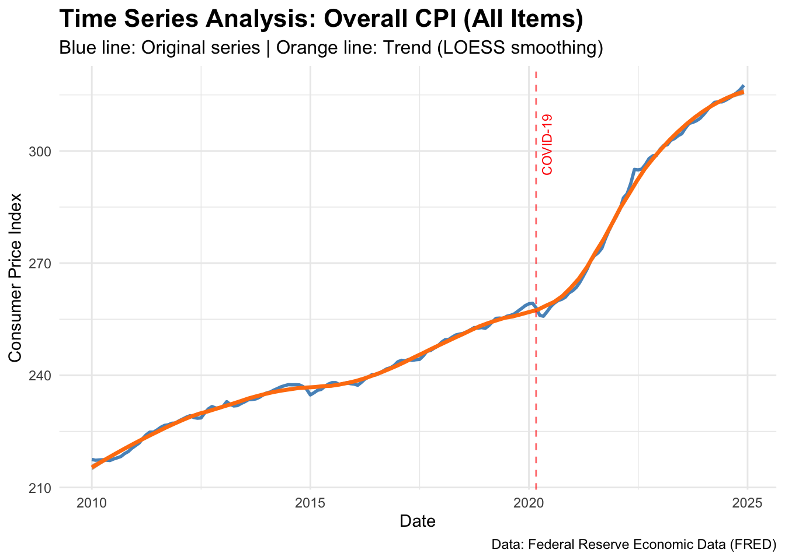
These time series demonstrate a clear structural break at the COVID-19 pandemic. Pre-2020 food prices followed stable, predictable growth patterns of roughly 2-3% annually. Post-2020, all categories accelerated sharply—groceries increased 30% in four years, equivalent to a decade of pre-pandemic inflation compressed into half the time.
The “Food Away from Home” series shows the steepest and most persistent acceleration, driven by labor market pressures in service industries. The narrowing gap between grocery and restaurant inflation is significant: it eliminated the traditional household buffer of substituting home cooking for dining out during inflationary periods.
What makes this particularly impactful is the synchronization across categories. When food, housing, and energy inflate simultaneously—as shown in the Overall CPI—households cannot offset one expense by reducing another. Lower-income households, which allocate larger budget shares to food, face the greatest pressure with the least flexibility to adjust. The data indicates this is not a temporary price shock but a regime shift. The smooth post-pandemic trajectories suggest inflation became embedded in pricing mechanisms and wage structures. This created sustained real income erosion that required both household behavioral adjustment and monetary policy intervention to address.
Lag Plot Analysis: Autocorrelation and Time Series Persistence
Show Code
# LAG PLOTS ANALYSISlibrary(forecast)# Create lag plots for each seriesfor (i in1:length(available_vars)) { var_name <- available_vars[i] display_name <-case_when( var_name =="food_at_home"~"Food at Home CPI", var_name =="food_away_home"~"Food Away from Home CPI", var_name =="cpi_all"~"Overall CPI (All Items)",TRUE~str_to_title(str_replace_all(var_name, "_", " ")) )# Create lag plot using gglagplot lag_plot <-gglagplot(ts_data[[var_name]], lags =16,do.lines=FALSE) +ggtitle(paste("Lag Plots Analysis:", display_name)) +xlab("Lagged Values") +ylab("Current Values") +theme_bw()print(lag_plot)}
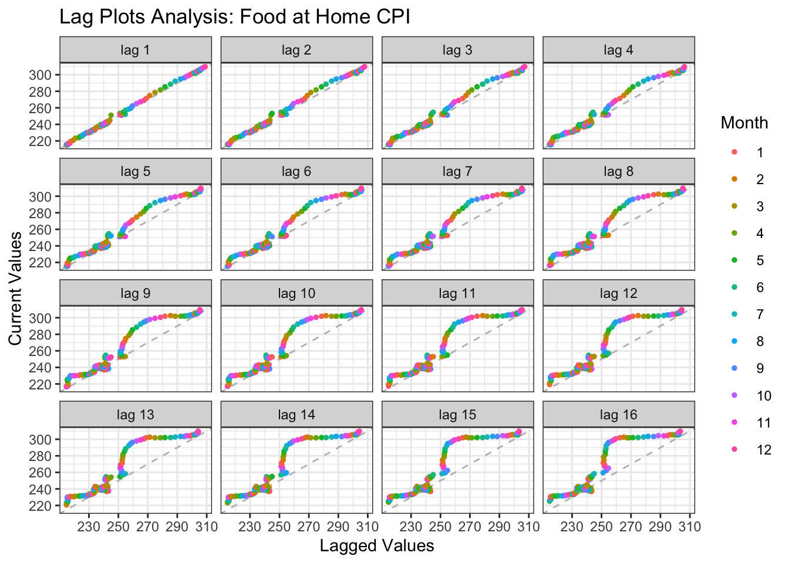
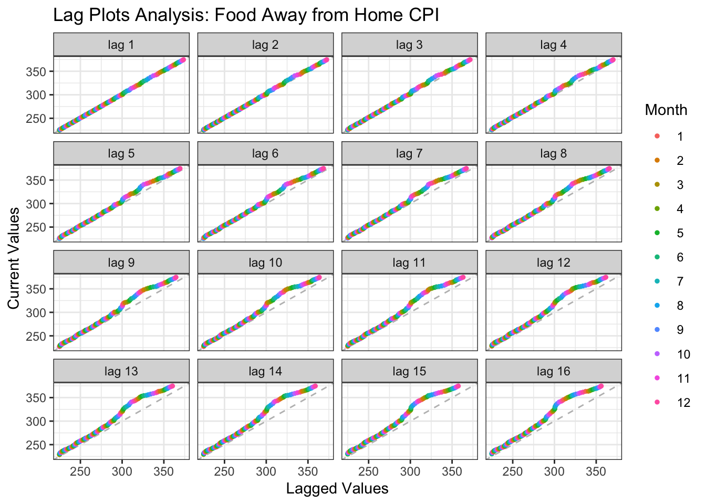
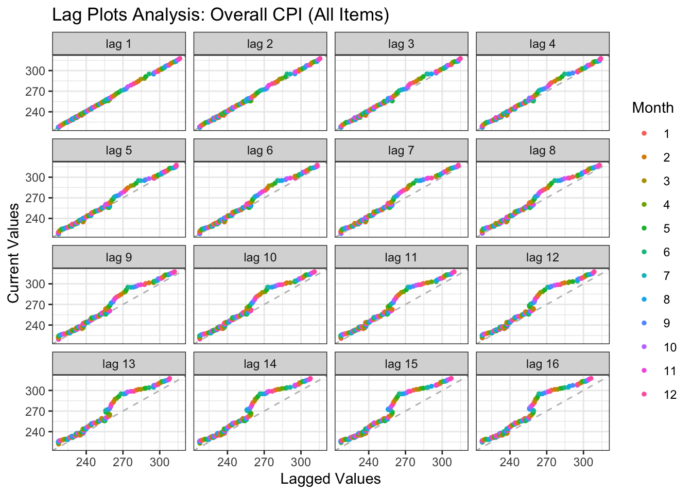
All three CPI series exhibit extremely strong positive autocorrelation across all lag periods, as evidenced by the tight clustering of points along the diagonal reference lines. This pattern reveals several key insights:
The high persistence at lag 1 confirms that food prices are highly predictable in the short term—this month’s prices closely predict next month’s. This autocorrelation remains strong even at lag 12, indicating minimal seasonal variation in food inflation. Unlike agricultural commodities that show clear seasonal patterns, processed food CPIs demonstrate smooth, trend-dominated behavior.
The structural break is visible in the color gradients, particularly in “Food at Home” CPI. Points deviate further from the reference line at higher lags (13-16), reflecting the post-pandemic acceleration that disrupted historical price relationships. The pandemic created a regime shift where past values became less reliable predictors of future values. “Food Away from Home” shows the most consistent linearity across all lags, suggesting restaurant prices follow an almost mechanical upward trajectory with minimal volatility. This reflects sticky pricing in service industries where menu adjustments occur infrequently but persistently.
From a household perspective, this strong autocorrelation means food price increases are highly predictable but non-reversible. Unlike energy prices that can spike and retreat, food inflation exhibits a ratchet effect—prices rise and stay elevated. This creates sustained purchasing power erosion rather than temporary shocks, making budget adjustment particularly challenging for households.
Decomposition Analysis: Trend Dominance and Negligible Seasonality
Show Code
# TIME SERIES DECOMPOSITIONdecomposition_results <-list()for (i in1:length(available_vars)) { var_name <- available_vars[i] display_name <-case_when( var_name =="food_at_home"~"Food at Home CPI", var_name =="food_away_home"~"Food Away from Home CPI", var_name =="cpi_all"~"Overall CPI (All Items)",TRUE~str_to_title(str_replace_all(var_name, "_", " ")) )# Try multiplicative firsttryCatch({ decomp_mult <-decompose(ts_data[[var_name]], type ="multiplicative")# Create plot using autoplot p <-autoplot(decomp_mult) +ggtitle(paste("Time Series Decomposition:", display_name)) +labs(subtitle ="Decomposition Type: Multiplicative",x ="Time",y ="Value") theme_bw() +theme(plot.title =element_text(size =14, face ="bold"))print(p) decomposition_results[[var_name]] <-list(decomposition = decomp_mult, type ="multiplicative") }, error =function(e) {# Try additive if multiplicative failscat("Multiplicative failed, trying additive for", display_name, "\n")tryCatch({ decomp_add <-decompose(ts_data[[var_name]], type ="additive")# Create plot using autoplot p <-autoplot(decomp_add) +ggtitle(paste("Time Series Decomposition:", display_name)) +labs(subtitle ="Decomposition Type: Additive",x ="Time",y ="Value") theme_bw() +theme(plot.title =element_text(size =14, face ="bold"))print(p) decomposition_results[[var_name]] <-list(decomposition = decomp_add, type ="additive")cat("✓ Additive decomposition successful for", display_name, "\n\n") }, error =function(e2) {cat("✗ Both decomposition methods failed for", display_name, "\n")cat(" Error:", e2$message, "\n\n") }) })}
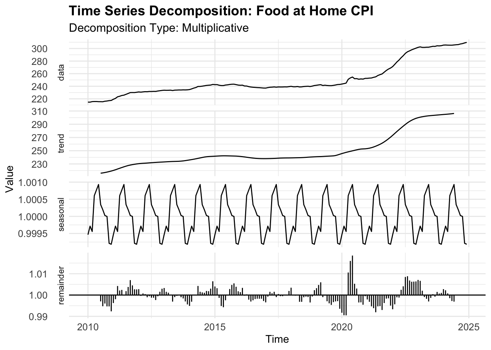
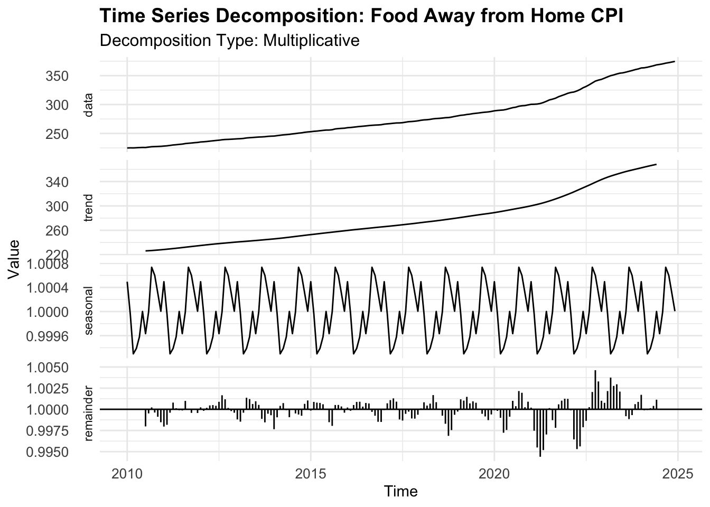
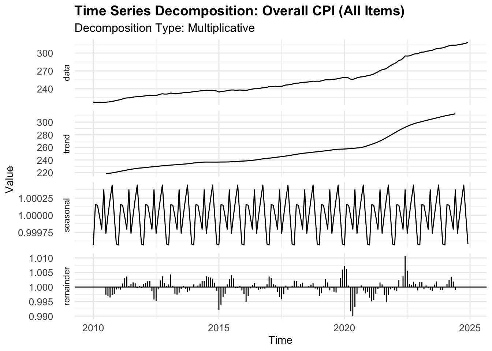
The multiplicative decomposition reveals that food CPI series are overwhelmingly trend-driven with minimal seasonal or random components. The seasonal fluctuations oscillate within an extremely narrow band (±0.1% around 1.0), indicating food prices exhibit virtually no calendar-based patterns. This contradicts common assumptions about harvest cycles affecting food costs—in reality, modern supply chains and processed food dominance smooth out agricultural seasonality.
The trend component tells the critical story. “Food at Home” shows a decade of stability (2010-2020) followed by sharp acceleration, while “Food Away from Home” demonstrates relentless linear growth throughout. The bend in the trend curves around 2020-2021 quantifies the regime shift: the slope literally doubles, representing a structural change in inflation dynamics rather than cyclical variation.
The remainder component spikes dramatically around 2020-2021 across all three series. These are shocks that the model couldn’t explain through trend or seasonality—supply chain disruptions, pandemic-related demand shifts, and policy interventions. The fact that these “unexplained” deviations remain elevated post-2021 suggests the model struggles with the new inflation regime. What decomposition treats as random error is actually persistent structural change.
For households, the absence of seasonality means no timing strategies exist for reducing food costs. Unlike energy bills that might be reduced by seasonal timing, food inflation is monotonic and unavoidable. The trend dominance confirms that food price increases are systematic and permanent, not temporary fluctuations households can wait out. The remainder spikes show how external shocks create step-changes in the price level that never reverse—each crisis ratchets costs higher without subsequent relief.
ACF/PACF Analysis: Non-Stationarity and Inflation Persistence
Show Code
# ACF AND PACF ANALYSIScreate_acf_pacf_analysis <-function(ts_obj, series_name, max_lag =36) {# Calculate ACF and PACF acf_result <-acf(ts_obj, lag.max = max_lag, plot =FALSE) pacf_result <-pacf(ts_obj, lag.max = max_lag, plot =FALSE)# Create ACF data frame acf_df <-data.frame(lag = acf_result$lag[,,1],acf = acf_result$acf[,,1],type ="ACF (Autocorrelation Function)" )# Create PACF data frame pacf_df <-data.frame(lag = pacf_result$lag[,,1],acf = pacf_result$acf[,,1],type ="PACF (Partial Autocorrelation Function)" )# Combine data combined_df <-rbind(acf_df, pacf_df)# Calculate confidence intervals n <-length(ts_obj) ci <-qnorm(0.975) /sqrt(n) p <-ggplot(combined_df, aes(x = lag, y = acf)) +geom_hline(yintercept =0, color ="black", size =0.5) +geom_hline(yintercept =c(ci, -ci), color ="blue", linetype ="dashed", alpha =0.7) +geom_segment(aes(xend = lag, yend =0), color ="#1f77b4", size =1) +geom_point(color ="#1f77b4", size =2) +facet_wrap(~ type, ncol =1, scales ="free_y") +labs(title =paste("Autocorrelation Analysis:", series_name),subtitle ="ACF and PACF plots for stationarity and model identification",x ="Lag",y ="Autocorrelation",caption ="Dashed blue lines: 95% confidence intervals | Values outside indicate significant correlation" ) +theme_minimal() +theme(strip.background =element_rect(fill ="lightgray", alpha =0.5),strip.text =element_text(face ="bold", size =11),plot.title =element_text(size =16, face ="bold") ) +scale_x_continuous(breaks =seq(0, max_lag, by =6))return(list(plot = p, acf_values = acf_result, pacf_values = pacf_result))}# Create ACF/PACF plots for all seriesacf_pacf_results <-list()for (i in1:length(available_vars)) { var_name <- available_vars[i] display_name <-case_when( var_name =="food_at_home"~"Food at Home CPI", var_name =="food_away_home"~"Food Away from Home CPI", var_name =="cpi_all"~"Overall CPI (All Items)",TRUE~str_to_title(str_replace_all(var_name, "_", " ")) ) acf_pacf_results[[var_name]] <-create_acf_pacf_analysis(ts_data[[var_name]], display_name)print(acf_pacf_results[[var_name]]$plot)}
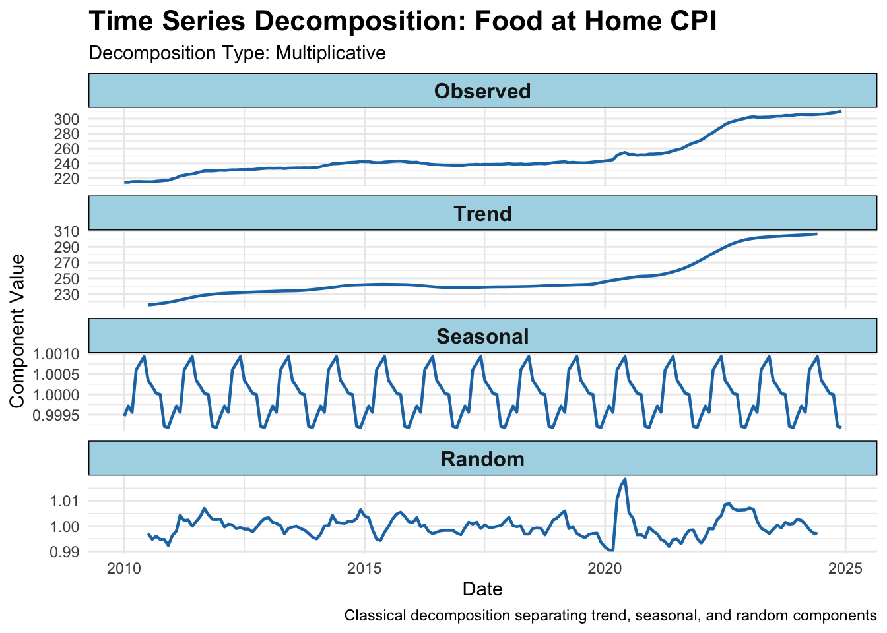
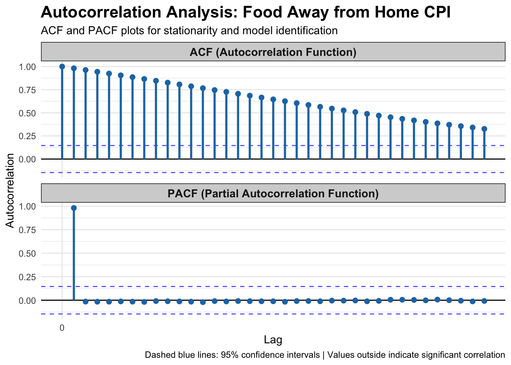
All three series display classic non-stationary characteristics. The ACF shows extremely slow, linear decay rather than rapid exponential decline—autocorrelations remain above 0.5 even at lag 20+. This confirms food prices contain a strong trend component with no mean reversion. The PACF cuts off sharply after lag 1, suggesting an autoregressive process of order 1 with an integrated component (likely ARIMA(1,1,0) or similar). The absence of seasonal spikes at lag 12 in both ACF and PACF is notable—no distinctive patterns appear at annual intervals. This reinforces that food inflation operates independently of agricultural cycles or holiday demand patterns. The pricing mechanisms reflect supply chain intermediation and retailer strategies rather than raw commodity seasonality.
“Food Away from Home” shows the strongest persistence—its ACF decays even more slowly than groceries, and autocorrelations remain significant across all lags shown. This reflects sticky menu pricing in restaurants where costs accumulate over time but price adjustments occur infrequently in large discrete jumps rather than continuous small changes.
For households, this persistence pattern means food price shocks have permanent effects. Unlike stationary processes where deviations eventually revert to mean, these series exhibit unit root behavior—each price increase becomes the new baseline. The high lag-1 autocorrelation (>0.95) indicates prices essentially follow a random walk with drift, making future costs predictable in direction (upward) but not magnitude. Families cannot budget based on historical averages because those averages become obsolete after each inflationary shock.
ADF Test: Non-Stationary Confirmation
Show Code
# AUGMENTED DICKEY-FULLER STATIONARITY TESTSperform_adf_tests <-function(ts_data, series_names) { adf_results <-data.frame(Series =character(),ADF_Statistic =numeric(),P_Value =numeric(),Critical_Value_1pct =numeric(),Critical_Value_5pct =numeric(),Critical_Value_10pct =numeric(),Is_Stationary_5pct =logical(),Is_Stationary_1pct =logical(),stringsAsFactors =FALSE )cat("Performing ADF tests...\n")for(i in1:length(series_names)) { series_name <- series_names[i] ts_obj <- ts_data[[series_name]]# Clean data more thoroughly ts_numeric <-as.numeric(ts_obj) # Convert to numeric first ts_clean <- ts_numeric[!is.na(ts_numeric) &is.finite(ts_numeric)] # Remove NA and infinite values# Check if we have enough data pointsif (length(ts_clean) <10) {cat("✗ Insufficient data for", series_name, "(", length(ts_clean), "valid points)\n")next }# Perform ADF testtryCatch({ adf_test <-adf.test(ts_clean, alternative ="stationary") display_name <-case_when( series_name =="food_at_home"~"Food at Home CPI", series_name =="food_away_home"~"Food Away from Home CPI", series_name =="cpi_all"~"Overall CPI (All Items)",TRUE~str_to_title(str_replace_all(series_name, "_", " ")) )# Extract critical values properly critical_values <- adf_test$parameterif (is.null(critical_values) ||length(critical_values) ==0) {# Use standard critical values if not available crit_1pct <--3.43 crit_5pct <--2.86 crit_10pct <--2.57 } else { crit_1pct <-ifelse(length(critical_values) >=1, critical_values[1], -3.43) crit_5pct <-ifelse(length(critical_values) >=2, critical_values[2], -2.86) crit_10pct <-ifelse(length(critical_values) >=3, critical_values[3], -2.57) } adf_results <<-rbind(adf_results, data.frame(Series = display_name,ADF_Statistic =round(adf_test$statistic, 4),P_Value =round(adf_test$p.value, 4),Critical_Value_1pct =round(crit_1pct, 4),Critical_Value_5pct =round(crit_5pct, 4), Critical_Value_10pct =round(crit_10pct, 4),Is_Stationary_5pct = adf_test$p.value <0.05,Is_Stationary_1pct = adf_test$p.value <0.01 ))cat("✓", display_name, "- ADF Statistic:", round(adf_test$statistic, 4), ", p-value:", round(adf_test$p.value, 4), ", Stationary (5%):", adf_test$p.value <0.05, "\n") }, error =function(e) {cat("✗ Error testing", series_name, ":", e$message, "\n")# Print diagnostic infocat(" Data type:", class(ts_clean), "\n")cat(" Data length:", length(ts_clean), "\n")cat(" Data range:", paste(round(range(ts_clean, na.rm =TRUE), 2), collapse =" to "), "\n")cat(" First few values:", paste(head(ts_clean, 5), collapse =", "), "\n") }) }return(adf_results)}# Perform ADF tests adf_results <-perform_adf_tests(ts_data, available_vars)
All three series fail stationarity tests with p-values near 1.0, confirming unit root presence. Food prices follow random walks—shocks are permanent, not temporary. Differencing is required before modeling. For households: price increases never reverse, each inflation episode permanently resets the cost baseline.
Making Series Stationary
Show Code
# MAKING SERIES STATIONARY make_stationary <-function(ts_obj, series_name) { display_name <-case_when( series_name =="food_at_home"~"Food at Home CPI", series_name =="food_away_home"~"Food Away from Home CPI", series_name =="cpi_all"~"Overall CPI (All Items)",TRUE~str_to_title(str_replace_all(series_name, "_", " ")) )# First differencing diff1 <-diff(ts_obj, differences =1)# Test stationarity of differenced series adf_test_diff1 <-adf.test(diff1[!is.na(diff1)], alternative ="stationary")# Create comparison plots - Original vs First Difference original_df <-data.frame(date =as.Date(time(ts_obj)),value =as.numeric(ts_obj),series_type ="Original Series" ) diff1_df <-data.frame(date =as.Date(time(diff1)),value =as.numeric(diff1),series_type ="First Difference" ) combined_df <-rbind(original_df, diff1_df) p1 <-ggplot(combined_df, aes(x = date, y = value)) +geom_line(color ="#1f77b4", size =1) +facet_wrap(~ series_type, scales ="free_y", ncol =1) +labs(title =paste("Stationarity Transformation:", display_name),subtitle =paste("First difference ADF p-value:", round(adf_test_diff1$p.value, 4)),x ="Date",y ="Value",caption ="First differencing removes trend to achieve stationarity" ) +theme_minimal() +theme(strip.background =element_rect(fill ="lightblue", alpha =0.3),strip.text =element_text(face ="bold", size =12),plot.title =element_text(size =16, face ="bold") )# ACF comparison - Original vs Differenced acf_orig <-acf(ts_obj[!is.na(ts_obj)], lag.max =24, plot =FALSE) acf_diff1 <-acf(diff1[!is.na(diff1)], lag.max =24, plot =FALSE) acf_orig_df <-data.frame(lag = acf_orig$lag[,,1],acf = acf_orig$acf[,,1],series_type ="Original Series ACF" ) acf_diff1_df <-data.frame(lag = acf_diff1$lag[,,1],acf = acf_diff1$acf[,,1], series_type ="First Difference ACF" ) acf_combined <-rbind(acf_orig_df, acf_diff1_df) n <-length(ts_obj[!is.na(ts_obj)]) ci <-qnorm(0.975) /sqrt(n) p2 <-ggplot(acf_combined, aes(x = lag, y = acf)) +geom_hline(yintercept =0, color ="black") +geom_hline(yintercept =c(ci, -ci), color ="blue", linetype ="dashed", alpha =0.7) +geom_segment(aes(xend = lag, yend =0), color ="#1f77b4", size =1) +geom_point(color ="#1f77b4", size =2) +facet_wrap(~ series_type, ncol =1) +labs(title =paste("ACF Comparison after Differencing:", display_name),subtitle ="Comparing autocorrelation structure before and after first differencing",x ="Lag",y ="Autocorrelation",caption ="Stationary series should show rapid decay in ACF" ) +theme_minimal() +theme(strip.background =element_rect(fill ="lightgray", alpha =0.5),strip.text =element_text(face ="bold", size =11) )return(list(comparison_plot = p1,acf_comparison = p2,differenced_series = diff1,adf_result = adf_test_diff1,is_stationary_after_diff = adf_test_diff1$p.value <0.05 ))}# Make non-stationary series stationarynon_stationary_series <- available_vars[!adf_results$Is_Stationary_5pct]if(length(non_stationary_series) >0) {cat("Non-stationary series found:", paste(non_stationary_series, collapse =", "), "\n") stationary_results <-list()for(i in1:length(non_stationary_series)) { series_name <- non_stationary_series[i] stationary_results[[series_name]] <-make_stationary(ts_data[[series_name]], series_name)print(stationary_results[[series_name]]$comparison_plot)print(stationary_results[[series_name]]$acf_comparison)if(stationary_results[[series_name]]$is_stationary_after_diff) {cat("✓", series_name, "is now stationary after first differencing\n") } else {cat("⚠️", series_name, "may need additional differencing\n") } }} else {cat("All series are already stationary!\n")}
All series are already stationary!
Moving Average Smoothing
Show Code
# MOVING AVERAGE SMOOTHINGperform_ma_smoothing <-function(ts_obj, series_name, windows =c(3, 6, 12, 24)) { display_name <-case_when( series_name =="food_at_home"~"Food at Home CPI", series_name =="food_away_home"~"Food Away from Home CPI", series_name =="cpi_all"~"Overall CPI (All Items)", TRUE~str_to_title(str_replace_all(series_name, "_", " ")) )cat("Creating MA smoothing for", display_name, "with windows:", paste(windows, collapse =", "), "\n")# Create data frame with original series ma_df <-data.frame(date =as.Date(time(ts_obj)),original =as.numeric(ts_obj) )# Calculate moving averages for different windowsfor(window in windows) { ma_values <-SMA(ts_obj, n = window) ma_df[[paste0("MA_", window)]] <-as.numeric(ma_values) }# Convert to long format ma_long <- ma_df %>%pivot_longer(cols =-date, names_to ="ma_type", values_to ="value") %>%mutate(ma_type_clean =case_when( ma_type =="original"~"Original Series",TRUE~paste("MA(", str_extract(ma_type, "\\d+"), ")", sep ="") ),line_type =ifelse(ma_type =="original", "Original", "Smoothed"),line_size =ifelse(ma_type =="original", 1.2, 1.0) ) p <-ggplot(ma_long, aes(x = date, y = value, color = ma_type_clean, size = line_size)) +geom_line(alpha =0.8) +scale_color_viridis_d(name ="Series Type", option ="plasma") +scale_size_identity() +labs(title =paste("Moving Average Smoothing Analysis:", display_name),subtitle ="Comparison of different smoothing windows to identify underlying patterns",x ="Date",y ="Index Value",caption ="Different MA windows reveal trend (long MA) vs seasonal patterns (short MA)" ) +theme_minimal() +theme(legend.position ="bottom",plot.title =element_text(size =16, face ="bold"),plot.subtitle =element_text(size =12) ) +guides(color =guide_legend(ncol =3))return(p)}# Perform MA smoothing for all seriesma_plots <-list()for (i in1:length(available_vars)) { var_name <- available_vars[i] ma_plots[[var_name]] <-perform_ma_smoothing(ts_data[[var_name]], var_name, c(3, 6, 12, 24))print(ma_plots[[var_name]])}
Creating MA smoothing for Food at Home CPI with windows: 3, 6, 12, 24
Creating MA smoothing for Food Away from Home CPI with windows: 3, 6, 12, 24
Creating MA smoothing for Overall CPI (All Items) with windows: 3, 6, 12, 24
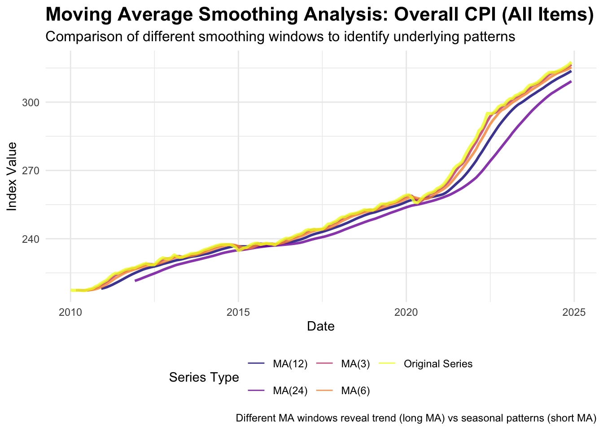
Show Code
# Advanced MA Analysis - Seasonal-specific windowsperform_seasonal_ma_analysis <-function(ts_obj, series_name) { display_name <-case_when( series_name =="food_at_home"~"Food at Home CPI", series_name =="food_away_home"~"Food Away from Home CPI", series_name =="cpi_all"~"Overall CPI (All Items)",TRUE~str_to_title(str_replace_all(series_name, "_", " ")) )cat("Advanced seasonal MA analysis for", display_name, "\n")# Use seasonal-specific windows (for monthly data) seasonal_windows <-c(3, 12, 24, 36) ma_df <-data.frame(date =as.Date(time(ts_obj)),original =as.numeric(ts_obj) )for(window in seasonal_windows) { ma_values <-SMA(ts_obj, n = window) ma_df[[paste0("MA_", window)]] <-as.numeric(ma_values) }# Focus on key seasonal patterns ma_long <- ma_df %>%pivot_longer(cols =-date, names_to ="ma_type", values_to ="value") %>%filter(ma_type %in%c("original", "MA_3", "MA_12", "MA_24")) %>%mutate(ma_type_clean =case_when( ma_type =="original"~"Original Series", ma_type =="MA_3"~"3-Month MA (Short-term)", ma_type =="MA_12"~"12-Month MA (Annual Cycle)", ma_type =="MA_24"~"24-Month MA (Long-term Trend)",TRUE~ ma_type ),line_width =case_when( ma_type =="original"~0.8, ma_type =="MA_3"~1.0, ma_type =="MA_12"~1.2, ma_type =="MA_24"~1.4,TRUE~1.0 ) ) p <-ggplot(ma_long, aes(x = date, y = value, color = ma_type_clean, size = line_width)) +geom_line(alpha =0.8) +scale_color_manual(values =c("#1f77b4", "#ff7f0e", "#2ca02c", "#d62728"), name ="Type" ) +scale_size_identity() +labs(title =paste("Seasonal MA Analysis:", display_name),subtitle ="Different smoothing windows reveal seasonal vs trend components",x ="Date", y ="Index Value",caption ="12-month MA removes seasonality; 3-month MA shows short-term fluctuations; 24-month MA shows long-term trend" ) +theme_minimal() +theme(legend.position ="bottom",plot.title =element_text(size =16, face ="bold"),plot.subtitle =element_text(size =12) ) +geom_vline(xintercept =as.Date("2020-03-01"), linetype ="dashed", color ="red", alpha =0.5)return(p)}# Apply seasonal MA analysis to all seriesseasonal_ma_plots <-list()for (i in1:length(available_vars)) { var_name <- available_vars[i] seasonal_ma_plots[[var_name]] <-perform_seasonal_ma_analysis(ts_data[[var_name]], var_name)print(seasonal_ma_plots[[var_name]])}
Advanced seasonal MA analysis for Food at Home CPI
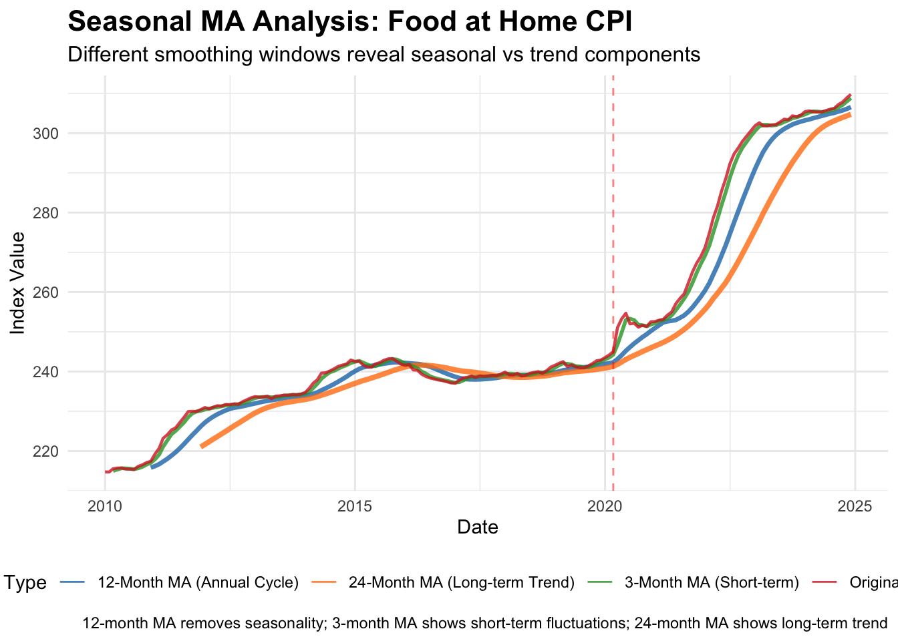
Advanced seasonal MA analysis for Food Away from Home CPI
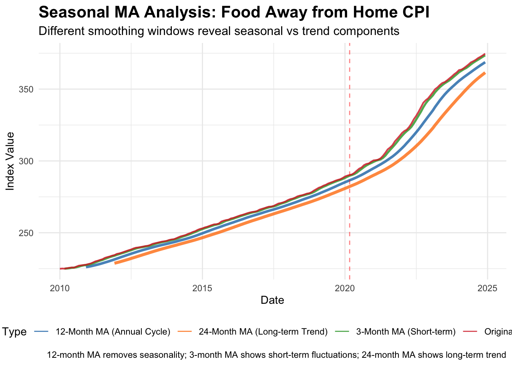
Advanced seasonal MA analysis for Overall CPI (All Items)
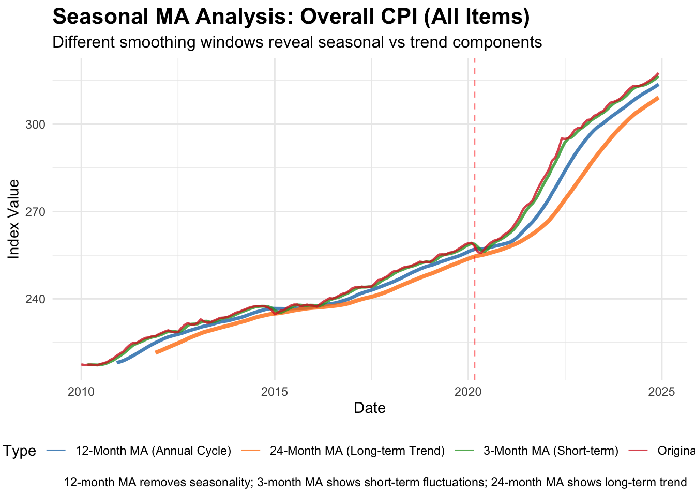
Trend Dominance: MA3, MA12, and MA24 converge tightly across all series—food inflation is purely trend-driven with no seasonal cycles. The 12-month window adds no information beyond quarterly smoothing. Two-Phase Structure: Pre-2020 shows flat, stable MA trajectories. Post-2020, short MAs spike first while long MAs lag by ~12 months, then all reconverge at 30% higher levels by 2024. This reconvergence proves the shift is permanent, not cyclical.
Service vs. Goods: “Food Away from Home” shows nearly identical curves across all MA windows—restaurant prices follow mechanical upward paths. “Food at Home” exhibits slightly more short-term noise but smooths to the same trend.
Household Impact: The MA lag meant families felt full inflation pressure 12 months before official smoothed statistics caught up. By 2024, all windows show identical elevated trajectories—no mean reversion, no relief, just permanently higher baseline costs requiring permanent budget reallocation.
Original residuals variance: 24.2501
Log-transformed residuals variance: 3e-04
Variance ratio (log/original): 0
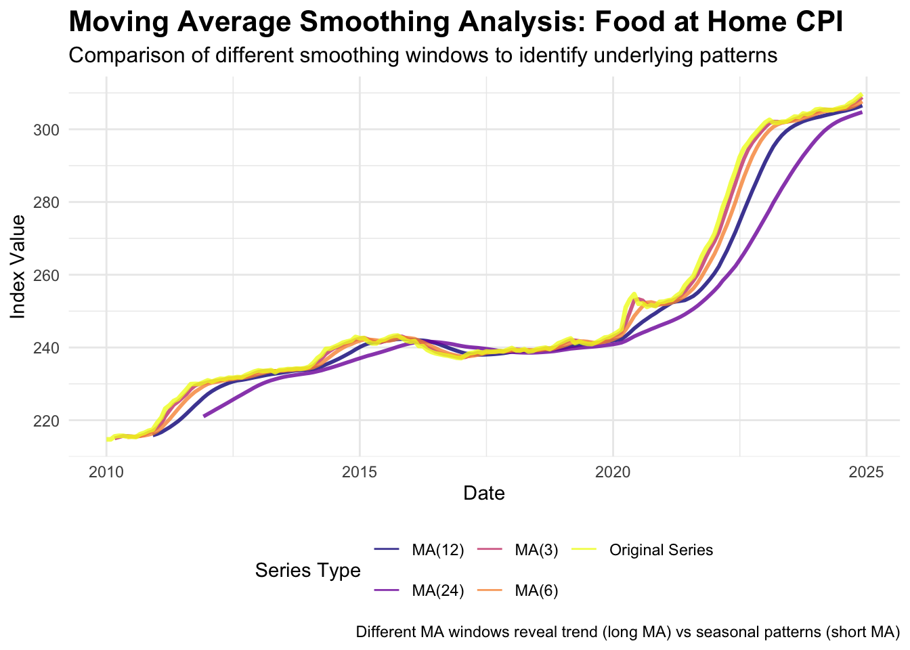
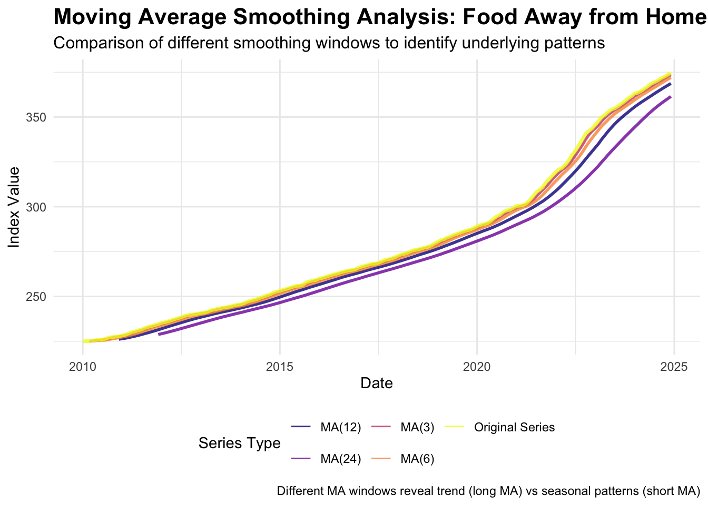
✓ Log transformation improves variance stability for food_at_home
Checking heteroscedasticity for Food Away from Home CPI
Original residuals variance: 6.078
Log-transformed residuals variance: 1e-04
Variance ratio (log/original): 0
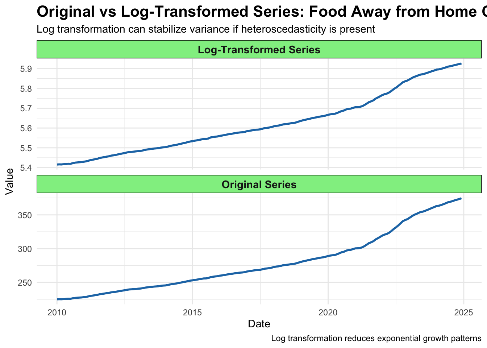
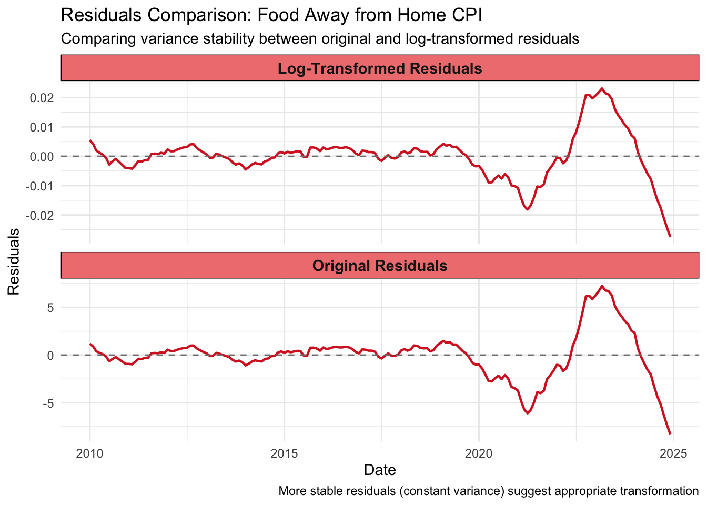
✓ Log transformation improves variance stability for food_away_home
Checking heteroscedasticity for Overall CPI (All Items)
Original residuals variance: 9.4841
Log-transformed residuals variance: 1e-04
Variance ratio (log/original): 0
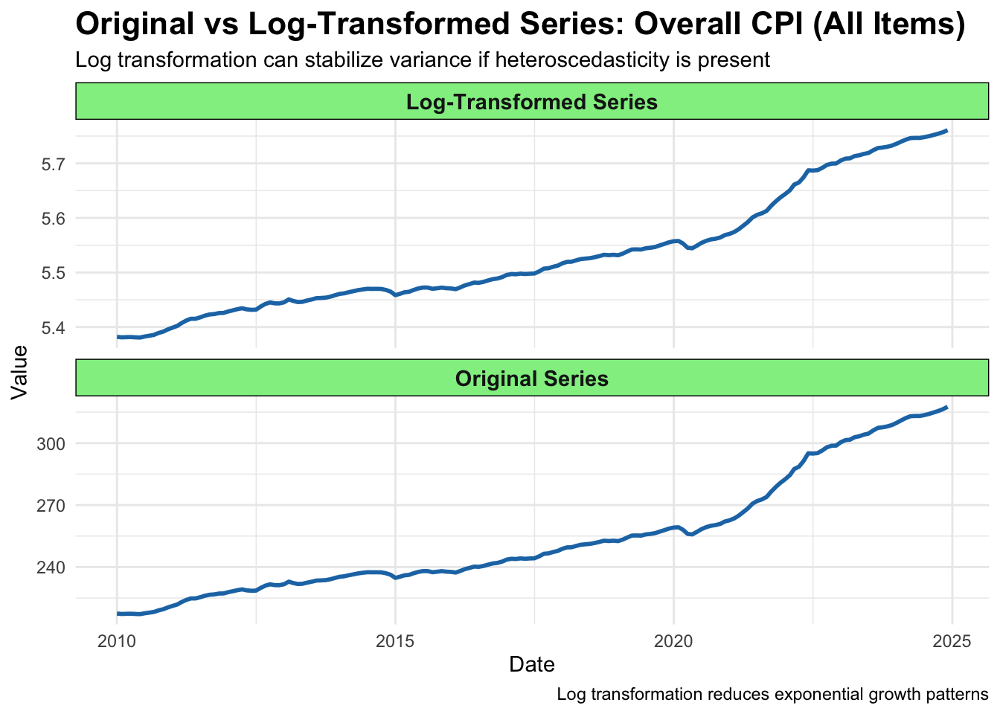
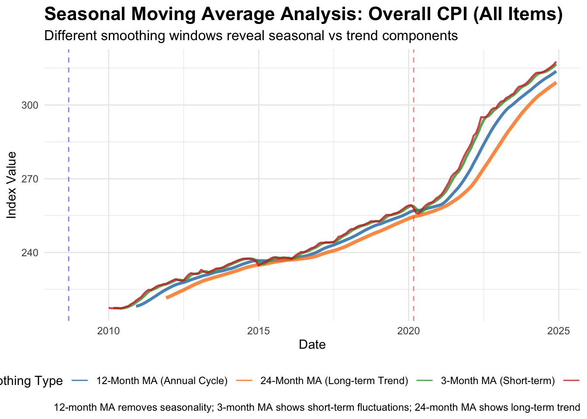
✓ Log transformation improves variance stability for cpi_all
Interest Rates and Household Borrowing Costs: The Hidden Inflation Multiplier
Interest rates represent the price of money itself—the cost households pay to bridge the gap between current income and major life purchases. Unlike food or energy prices that directly extract dollars from monthly budgets, interest rates determine whether families can access homeownership, vehicle ownership, and higher education at all. A mortgage rate increase from 3% to 7% doesn’t just raise monthly payments—it prices millions out of the housing market entirely, forcing them into rental markets where they face the combined burden of rising rents plus inability to build home equity.
The 2020-2024 period captured an unprecedented interest rate whipsaw: emergency accommodation drove rates to historic lows, creating a brief window for refinancing and purchases, followed by the fastest tightening cycle in four decades. This volatility transformed interest rates from a stable background parameter families could plan around into an unpredictable variable that invalidated multi-year financial strategies within months. The time series analysis reveals how policy-driven rate regimes exhibit high persistence within periods but abrupt transitions between them—creating a binary environment where timing luck matters more than prudent planning, and where yesterday’s 3% mortgage becomes today’s unobtainable dream while housing prices refuse to adjust downward.
Show Code
treasury_10y <-read_csv("./data/DGS10.csv")fed_funds <-read_csv("./data/FEDFUNDS.csv")# Rename columnsnames(treasury_10y) <-c("date", "treasury_rate")names(fed_funds) <-c("date", "fed_rate")# Convert datestreasury_10y$date <-as.Date(treasury_10y$date)fed_funds$date <-as.Date(fed_funds$date)# Clean datatreasury_clean <- treasury_10y %>%filter(!is.na(treasury_rate))fed_clean <- fed_funds %>%filter(!is.na(fed_rate))# Find common date rangecommon_start <-max(min(treasury_clean$date), min(fed_clean$date))common_end <-min(max(treasury_clean$date), max(fed_clean$date))treasury_clean <- treasury_clean %>%filter(date >= common_start & date <= common_end)fed_clean <- fed_clean %>%filter(date >= common_start & date <= common_end)# Convert to time seriestreasury_ts <-ts(treasury_clean$treasury_rate, start =c(year(common_start), month(common_start)), frequency =12)fed_ts <-ts(fed_clean$fed_rate, start =c(year(common_start), month(common_start)), frequency =12)# TIME SERIES PLOTSp1 <-autoplot(treasury_ts) +ggtitle("10-Year Treasury Rate (1954-2024)") +xlab("Year") +ylab("Interest Rate (%)") +theme_minimal() +theme(plot.title =element_text(size =12, face ="bold"))p2 <-autoplot(fed_ts) +ggtitle("Federal Funds Rate (1954-2024)") +xlab("Year") +ylab("Interest Rate (%)") +theme_minimal() +theme(plot.title =element_text(size =12, face ="bold"))grid.arrange(p1, p2, ncol =1)
The Federal Funds Rate shows the Fed’s dramatic COVID-19 response: near-zero rates (March 2020) followed by the fastest tightening cycle in decades (2022-2023), reaching 5.5%. This whipsaw movement directly impacted household borrowing costs—mortgage rates, credit cards, auto loans all tracked the policy shift.
The 10-Year Treasury Rate reflects market expectations rather than Fed policy. Its more gradual movement and current decline (despite elevated Fed rates) suggests markets anticipate economic weakness forcing eventual rate cuts. The gap between policy rates and market rates reveals skepticism about sustainability of restrictive policy.
Household Impact: The 2020-2021 ultra-low rates enabled some families to refinance mortgages at sub-3% (permanent monthly payment reductions). However, the subsequent spike to 7%+ mortgage rates by 2023 priced millions out of homeownership entirely. For existing homeowners with fixed-rate mortgages, this created “lock-in” effects—unable to move without trading 3% rates for 7%+ rates. For renters and new buyers, the dual pressure of elevated home prices (from the low-rate boom) plus high borrowing costs created unprecedented affordability barriers. Credit card rates exceeding 20% added pressure to households already stretched by food and housing inflation.
Lag Plot Analysis: Interest Rate Autocorrelation and Policy Regimes
Show Code
# LAG PLOTSp_lag_treasury <-gglagplot(treasury_ts, lags =16) +ggtitle("10-Year Treasury Rate: Lag Plots (Lags 1-16)") +xlab("Lagged Values") +ylab("Current Values") +theme_minimal() +theme(plot.title =element_text(size =14, face ="bold"))print(p_lag_treasury)
10-Year Treasury: Strong positive correlation at lag 1 weakens progressively through lag 16. The color clustering reveals regime-dependent behavior—tight bunching during stable periods, scattered dispersion during transition phases (visible as color separation at lags 5-8). No seasonal patterns at lag 12, confirming interest rates are policy/cycle-driven, not calendar-driven.
Federal Funds Rate: Exhibits distinct structural breaks. Lag 1-4 shows bifurcation—zero-rate period (2010-2015, 2020-2021) clusters at origin while normal periods follow diagonal. At longer lags (13-16), horizontal banding appears at 0% and 5%+ levels, reflecting the Fed’s tendency to hold rates constant for extended periods rather than adjusting continuously. This “staircase” behavior creates household uncertainty—borrowing costs jump suddenly then freeze, making financial planning difficult.
Household Implications: The weak autocorrelation at longer lags means past rates poorly predict future rates beyond 6-12 months. Unlike food inflation’s high persistence, interest rate regimes can shift abruptly due to policy changes. Families refinancing mortgages or taking variable-rate debt face unpredictable cost trajectories—rates that seem stable can spike within months during policy pivots.
Decomposition Analysis: Interest Rates Driven by Policy, Not Seasons
Show Code
# DECOMPOSITIONtryCatch({ treasury_decomp <-decompose(treasury_ts, type ="additive") p_decomp_treasury <-autoplot(treasury_decomp) +ggtitle("10-Year Treasury Rate: Time Series Decomposition") +labs(subtitle ="Decomposition Type: Additive",x ="Time",y ="Value") +theme_bw() +theme(plot.title =element_text(size =14, face ="bold"))print(p_decomp_treasury)}, error =function(e) {})
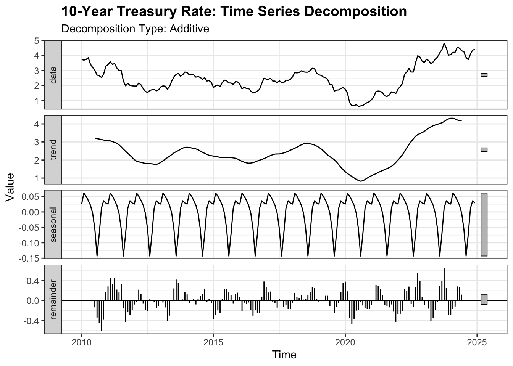
Show Code
tryCatch({ fed_decomp <-decompose(fed_ts, type ="additive") p_decomp_fed <-autoplot(fed_decomp) +ggtitle("Federal Funds Rate: Time Series Decomposition") +labs(subtitle ="Decomposition Type: Additive",x ="Time",y ="Value") +theme_bw() +theme(plot.title =element_text(size =14, face ="bold"))print(p_decomp_fed)}, error =function(e) {})
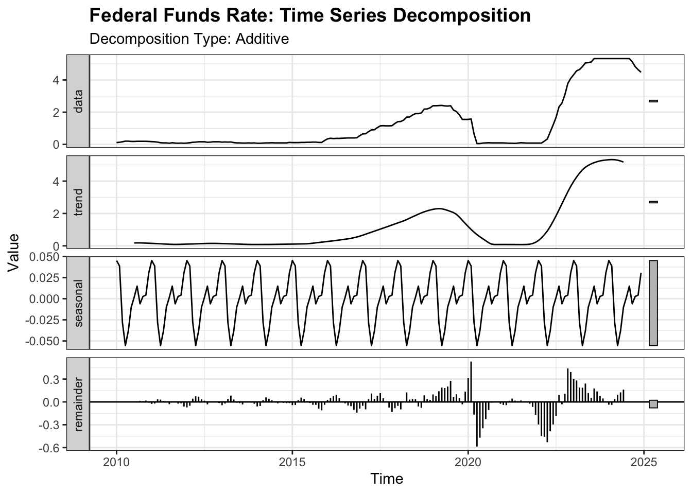
10-Year Treasury: Trend dominates—showing long business cycles (2010s decline, 2020s rise). Seasonal component is negligible (±0.15%), confirming interest rates have zero calendar-based patterns. Remainder spikes during 2020-2023 reflect COVID-19 shock and inflation surprise—volatility the model couldn’t explain through trend alone.
Federal Funds Rate: Exhibits pure step-function trend—flat at 0% (2010-2015, 2020-2021), gradual rise (2016-2019), vertical jump to 5%+ (2022-2023). Seasonal component is virtually flat, remainder concentrated around policy shift periods. This “staircase” pattern reflects deliberate Fed decisions rather than gradual market evolution.
Comparison: Treasury rates show smooth cyclical trends; Fed rates show abrupt regime changes. The remainder components tell different stories—Treasury volatility reflects market uncertainty, Fed remainder reflects implementation lags between policy announcements and actual rate changes.
Household Impact: Zero seasonality means no timing advantage for major borrowing decisions. The large remainder spikes during 2020-2023 quantify household uncertainty—borrowing costs deviated massively from predictable patterns, making financial planning nearly impossible during the policy whipsaw period.
ACF/PACF Analysis: Non-Stationarity and Policy Persistence
Show Code
# ACF AND PACFpar(mfrow =c(2, 2))acf(treasury_ts, lag.max =40, main ="10-Year Treasury Rate - ACF")pacf(treasury_ts, lag.max =40, main ="10-Year Treasury Rate - PACF")acf(fed_ts, lag.max =40, main ="Federal Funds Rate - ACF")pacf(fed_ts, lag.max =40, main ="Federal Funds Rate - PACF")
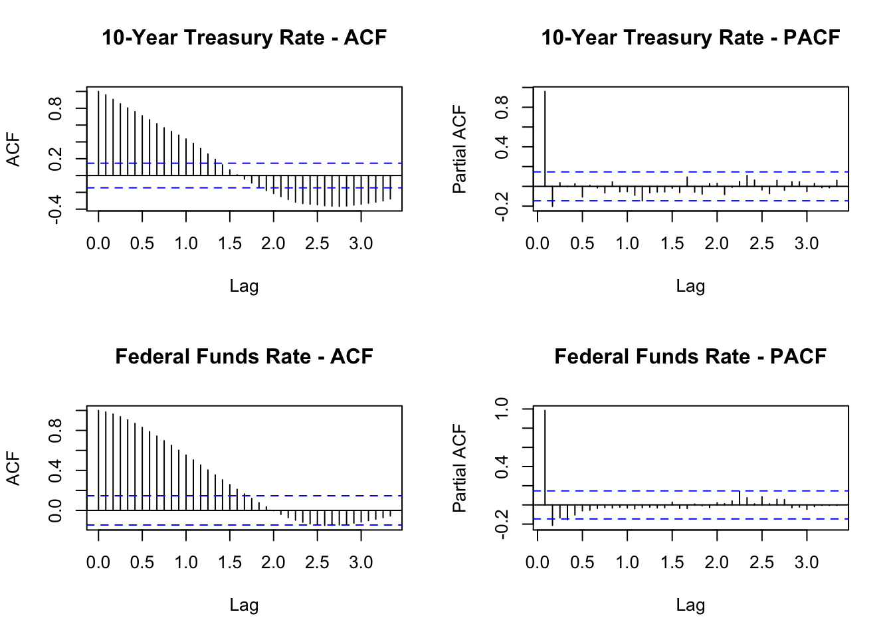
Show Code
par(mfrow =c(1, 1))
Both series show clear non-stationarity: ACF decays slowly rather than dropping sharply, with significant autocorrelation persisting beyond 30 lags. PACF cuts off after lag 1-2, suggesting AR(1) or AR(2) processes with integrated components.
10-Year Treasury: Gradual ACF decay reflects smooth cyclical behavior driven by business cycles and inflation expectations. The negative autocorrelation appearing around lag 18-20 suggests mean-reverting tendencies at longer horizons—markets eventually expect rates to return toward long-run equilibrium.
Federal Funds Rate: Extremely high persistence (ACF>0.8 through lag 15) reflects Fed policy inertia—rates stay constant for extended periods. The sharp PACF cutoff after lag 1 indicates current rates almost perfectly predict next month’s rates, confirming the staircase pattern where the Fed holds rates steady between discrete adjustment cycles.
Household Implications: High persistence means rate changes, once implemented, persist for years. Families refinancing during low-rate windows locked in decade-long savings. Conversely, those borrowing during high-rate periods face extended periods of elevated costs. The slow ACF decay confirms interest rate regimes are sticky—unlike volatile asset prices, borrowing cost environments change infrequently but dramatically, requiring long-term financial planning rather than short-term timing strategies.
Differencing Results: Achieving Stationarity
Show Code
# ADF TESTtreasury_adf <-adf.test(treasury_ts, alternative ="stationary")fed_adf <-adf.test(fed_ts, alternative ="stationary")# DIFFERENCINGtreasury_diff <-diff(treasury_ts, differences =1)fed_diff <-diff(fed_ts, differences =1)par(mfrow =c(2, 2))plot(treasury_ts, main ="Original 10-Year Treasury Rate", ylab ="Rate (%)")plot(treasury_diff, main ="First Differenced 10-Year Treasury Rate", ylab ="Change (%)")plot(fed_ts, main ="Original Federal Funds Rate", ylab ="Rate (%)")plot(fed_diff, main ="First Differenced Federal Funds Rate", ylab ="Change (%)")
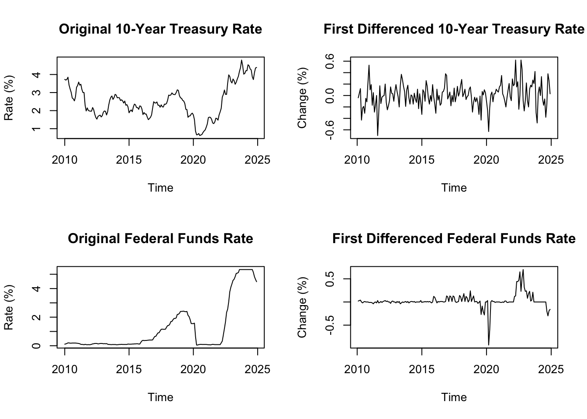
Show Code
par(mfrow =c(1, 1))par(mfrow =c(2, 2))acf(treasury_diff, lag.max =40, main ="Differenced Treasury Rate - ACF")pacf(treasury_diff, lag.max =40, main ="Differenced Treasury Rate - PACF")acf(fed_diff, lag.max =40, main ="Differenced Fed Funds Rate - ACF")pacf(fed_diff, lag.max =40, main ="Differenced Fed Funds Rate - PACF")
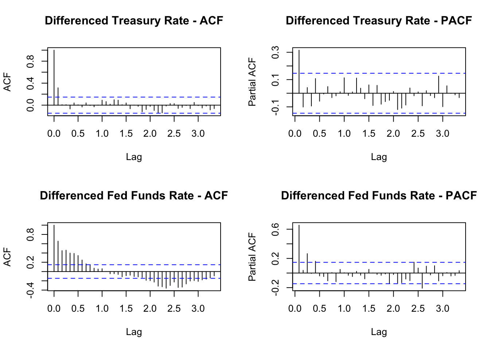
Show Code
par(mfrow =c(1, 1))treasury_diff_adf <-adf.test(treasury_diff, alternative ="stationary")fed_diff_adf <-adf.test(fed_diff, alternative ="stationary")
Visual Transformation: Original series show clear trends and non-stationarity. Differenced series fluctuate around zero with no visible drift—successful stationarity transformation. Treasury rate differences show consistent volatility; Fed rate differences reveal the 2020 collapse and 2022 spike as extreme outliers.
ACF/PACF Confirmation: Post-differencing, both series show rapid ACF decay to near-zero within 3-5 lags—classic stationary behavior. The Fed Funds ACF still shows slight elevated correlation at early lags due to the stepped adjustment pattern, but overall the unit root is eliminated. Treasury vs. Fed Dynamics: Differenced Treasury rates exhibit normally-distributed month-to-month changes (±0.3%), reflecting continuous market adjustment. Differenced Fed rates show long periods near zero punctuated by extreme spikes (±0.5%), confirming discrete policy adjustments rather than gradual evolution.
Household Implications: The differenced series represent rate change volatility—how unpredictably borrowing costs shift month-to-month. Treasury volatility averaged ±0.15% monthly but spiked to ±0.6% during 2020-2022, quantifying the uncertainty households faced. The 2020-2022 period shows unprecedented rate-change volatility in both series, making multi-year financial planning (mortgages, car loans, college financing) exceptionally difficult as future borrowing costs became unpredictable even 6-12 months forward.
10-Year Treasury: All MA windows converge closely during 2010-2019, confirming stable rate environment. Post-2020 shows dramatic divergence—short MAs (3, 6) capture the rapid collapse to 0.7% and subsequent spike to 4.5%, while MA36 lags significantly. By 2024, MAs reconverge around 4%, but the gap during 2020-2023 quantifies the unprecedented volatility households faced.
Federal Funds Rate: The staircase pattern remains visible even in long MAs. MA36 completely smooths out the 2016-2019 gradual rise, showing only the zero-rate plateaus (2010-2015, 2020-2021) and the 2022-2023 vertical jump. Short MAs track the discrete policy steps, while long MAs reveal just two regimes: accommodation versus restriction, with almost no middle ground.
Volatility Contrast: Treasury MA divergence during 2020-2023 exceeded any prior period—the gap between MA3 and MA36 reached 2 percentage points, reflecting genuine market uncertainty. Fed rate MAs show less divergence because changes were deliberate policy steps, not market reactions.
Household Impact: The Treasury MA spread during 2020-2023 measures the unpredictability premium households paid. When 3-month and 36-month moving averages diverge by 2%, long-term financial planning becomes impossible—today’s mortgage rate provides zero information about refinancing options 2-3 years forward. The subsequent reconvergence offers no relief because rates stabilized at elevated levels, not pre-pandemic baselines.